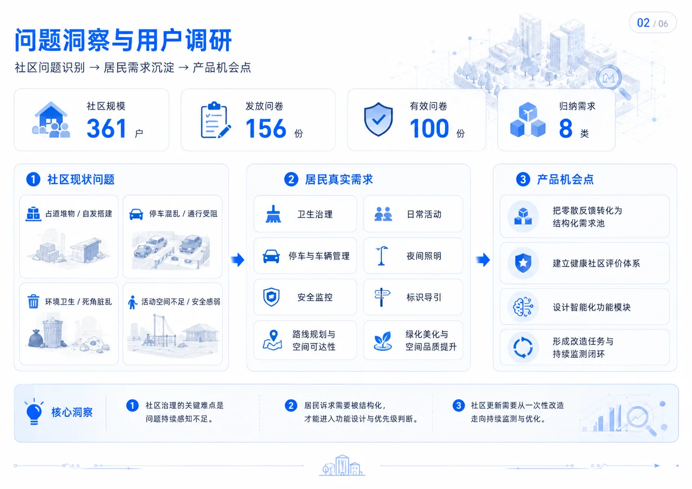
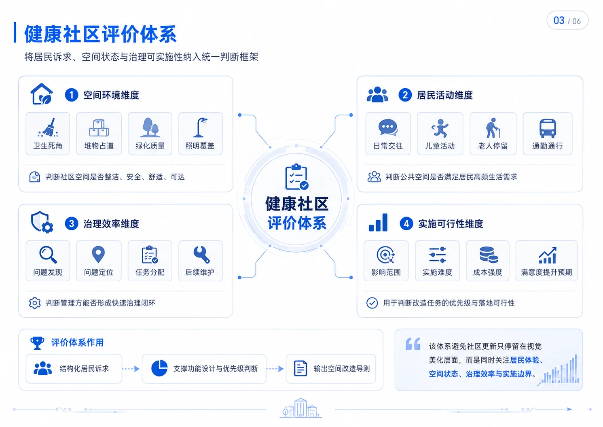
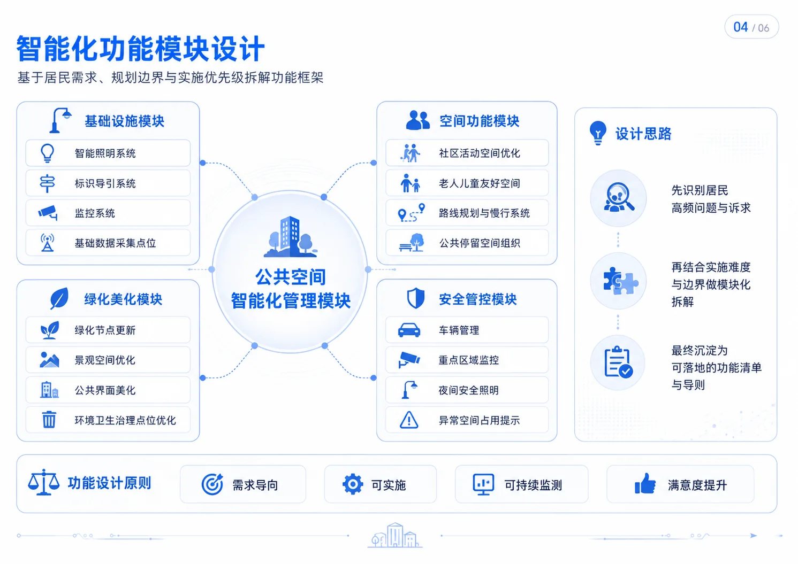
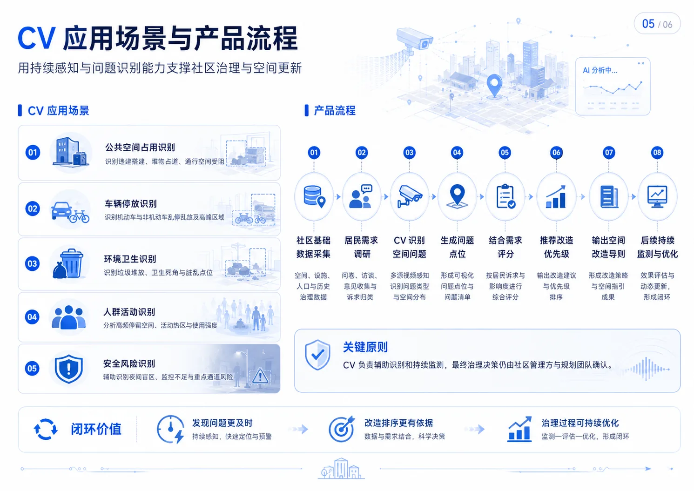

面向西安市老旧社区公共空间治理场景，把传统一次性的现场调研和规划设计，转化为「居民需求识别 → 空间问题识别 → 功能模块规划 → 改造导则输出 → 后续 CV 监测」的产品化闭环。一端服务政府与街道的治理决策（G 端），一端服务规划设计团队与产品技术团队的方案落地（B 端）。
本项目面向西安市老旧社区公共空间管理场景，针对居民自发搭建、空间占用、环境卫生、停车混乱、公共活动空间不足、安全感弱等问题，探索基于 CV 技术的社区公共空间智能化治理方案，为老旧社区健康化建设、空间品质提升和基层治理精细化提供产品化支撑。
传统社区管理依赖人工巡查和居民反馈，无法持续掌握占道堆物、车辆乱停、卫生死角、活动空间冲突的发生位置与变化趋势。我负责设计并执行居民调研方案，覆盖 361 户居民及社区公共空间使用者，下发问卷 156 份，回收有效问卷 100 份，整理人群结构、行为特征、活动目的和空间需求。
卫生治理 / 日常活动 / 停车与车辆管理 / 夜间照明 / 安全监控 / 标识导引 / 路线规划与空间可达 / 绿化美化与公共空间品质提升。
把居民诉求 + 空间问题 + CV 识别能力 + 改造任务连接起来，提供数据依据与功能规划，让社区更新不只停留在视觉美化。

为了避免社区更新只停留在视觉美化层面，我参与搭建了健康社区评价体系，把居民体验、空间状态和治理可实施性纳入统一判断框架，最终用于支撑智能化功能设计与空间改造导则制定。

基于居民需求、规划边界与实施条件，把社区改造拆解为四大智能化功能模块，每个模块进一步细化为可落地的智能化功能与硬件接入点，形成「需求 → 模块 → 功能 → 实施」的层层分解。

CV 在这里不是"装个摄像头"，而是支撑社区治理与空间更新的持续感知与识别能力。围绕 CV 能拿来做什么，我梳理了应用场景与产品流程：从数据采集，到识别动作，到任务流转，到回流闭环——CV 成为社区治理的"持续感知层"。
公共空间占用 / 车辆乱停 / 环境卫生 / 安全监控 / 人群活动密度——5 类典型场景对应 5 类识别任务。
社区监控接入 → 数据采集 → CV 识别 → 问题定位 → 治理任务派发 → 现场处理 → 数据回流 → 持续监控——形成可复用的闭环。

项目从调研到方案输出形成了可复用的方法沉淀，不止于一次性的社区改造，更为后续 G 端社区治理产品与 B 端规划方案提供需求依据与功能边界。
5 项关键成果：完成印花布园社区调研、回收有效问卷 100 份、搭建健康社区评价体系、设计 4 大功能模块与 8 类智能化功能、输出居民调研报告与改造导则。
对居民 / 对社区管理 / 对规划团队 / 对产品技术团队都有明确价值——把需求 + 评价 + CV + 改造串成可复用的产品方法论。